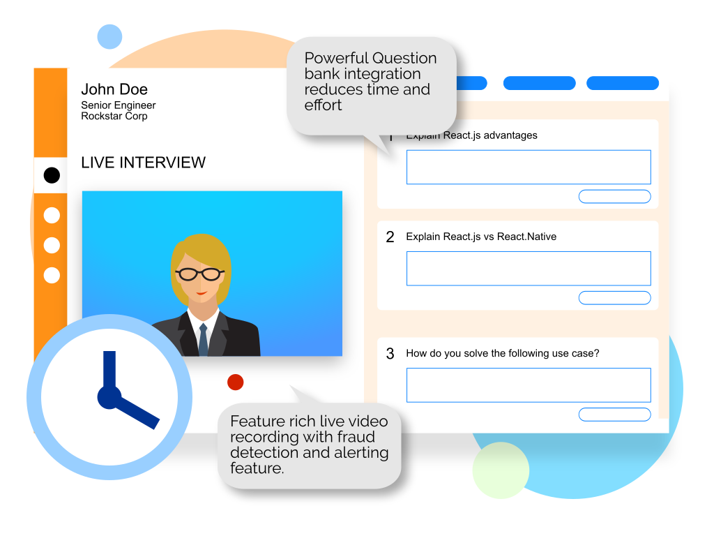

ON DEMAND INTERVIEWS
Often, we require an interview solution which is free from logistical challenges like scheduling, follow ups yet provide full flexibility of
design the structure and remote proctoring.
Try FloCareer’s On Demand Interviews to automate your interviews fully. Your candidates can appear for the interview anywhere, anytime and on
any device. Get the interview report with video recording immediately on your system instantly.
Quick Feature List
- Video Enabled
- Customization Questions sets – MCQs, Descriptive, Coding, Scenario based etc
- Remote Proctoring
- Gamified Experience